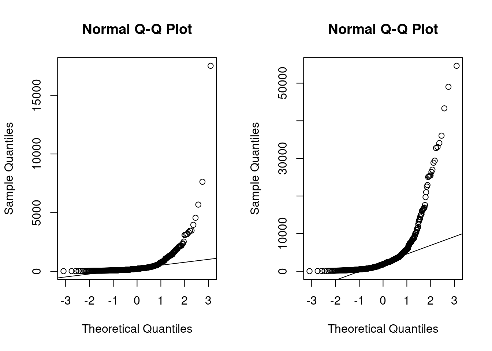
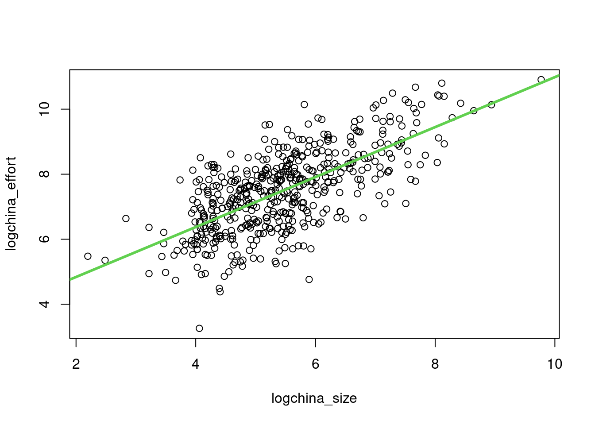

Chapter 3 Regression
3.1 Linear Regression modeling
Linear Regression is one of the oldest and most known predictive methods. As its name says, the idea is to try to fit a linear equation between a dependent variable and an independent, or explanatory, variable. The idea is that the independent variable \(x\) is something the experimenter controls and the dependent variable \(y\) is something that the experimenter measures. The line is used to predict the value of \(y\) for a known value of \(x\). The variable \(x\) is the predictor variable and \(y\) the response variable.
Multiple linear regression uses 2 or more independent variables for building a model. See https://www.wikipedia.org/wiki/Linear_regression.
First proposed many years ago but still very useful…

Galton Data
- The equation takes the form \(\hat{y}=b_0+b_1 * x\)
- The method used to choose the values \(b_0\) and \(b_1\) is to minimize the sum of the squares of the residual errors.
3.1.1 Regression: Galton Data
Not related to Software Engineering but …
library(UsingR)
data(galton)
par(mfrow=c(1,2))
hist(galton$child,col="blue",breaks=100)
hist(galton$parent,col="blue",breaks=100)
plot(galton$parent,galton$child,pch=1,col="blue", cex=0.4)
lm1 <- lm(galton$child ~ galton$parent)
lines(galton$parent,lm1$fitted,col="red",lwd=3)
plot(galton$parent,lm1$residuals,col="blue",pch=1, cex=0.4)
abline(c(0,0),col="red",lwd=3)
qqnorm(galton$child)
3.1.2 Simple Linear Regression
Given two variables \(Y\) (response) and \(X\) (predictor), the assumption is that there is an approximate (\(\approx\)) linear relation between those variables.
The mathematical model of the observed data is described as (for the case of simple linear regression): \[ Y \approx \beta_0 + \beta_1 X\]
the parameter \(\beta_0\) is named the intercept and \(\beta_1\) is the slope
Each observation can be modeled as
\[y_i = \beta_0 + \beta_1 x_i + \epsilon_i; \epsilon_i \sim N(0,\sigma^2)\] - \(\epsilon_i\) is the error - This means that the variable \(y\) is normally distributed: \[ y_i \sim N( \beta_0 + \beta_1 x_i, \sigma^2) \]
- The predictions or estimations of this model are obtained by a linear equation of the form \(\hat{Y}=\hat{\beta_0} + \hat{\beta}_1X\), that is, each new prediction is computed with \[\hat{y}_i = \hat{\beta}_0 + \hat{\beta}_1x_i \].
- The actual parameters \(\beta_0\) and \(\beta_1\) are unknown
- The parameters \(\hat{\beta}_0\) and \(\hat{\beta}_1\) of the linear equation can be estimated with different methods.
3.1.3 Least Squares
- One of the most used methods for computing \(\hat{\beta}_0\) and \(\hat{\beta}_1\) is the criterion of “least squares” minimization.
- The data is composed of \(n\) pairs of observations \((x_i, y_i)\)
- Given an observation \(y_i\) and its corresponding estimation \(\hat{y_i})\) the residual \(e_i\) is defined as \[e_i= y_i - \hat{y_i}\]
- the Residual Sum of Squares is defined as \[RSS=e_1^2+\dots + e_i^2+\dots+e_n^2\]
- the Least Squares Approach minimizes the RSS
- as result of that minimizitation, it can be obtained, by means of calculus, the estimation of \(\hat{\beta}_0\) and \(\hat{\beta}_1\) as \[\hat{\beta}_1=\frac{\sum_{i=1}^{n}{(x_i-\bar{x})(y_i-\bar{y})}}{\sum_{i=1}^{n}(x_i-\bar{x})^2}\] and \[\hat{\beta}_0=\bar{y}-\hat{\beta}_1\bar{x} \] where \(\bar{y}\) and \(\bar{x}\) are the sample means.
- the variance \(\sigma^2\) is estimated by \[\hat\sigma^2 = {RSS}/{(n-2)}\] where n is the number of observations
- The Residual Standard Error is defined as \[RSE = \sqrt{{RSS}/{(n-2)}}\]
- The equation \[ Y = \beta_0 + \beta_1 X + \epsilon\] defines the linear model, i.e., the population regression line
- The least squares line is \(\hat{Y}=\hat{\beta_0} + \hat{\beta}_1X\)
- Confidence intervals are computed using the standard errors of the intercept and the slope.
- The \(95\%\) confidence interval for the slope is computed as \[[\hat{\beta}_1 - 2 \cdot SE(\hat{\beta}_1), \hat{\beta}_1+SE(\hat{\beta}_1)]\]
- where \[ SE(\hat{\beta}_1) = \sqrt{\frac{\sigma^2}{\sum_{i=1}^{n}(x_i-\bar{x})^2}}\]
3.1.4 Linear regression in R
The following are the basic commands in R:
- The basic function is
lm(), that returns an object with the model. - Other commands:
summaryprints out information about the regression,coefgives the coefficients for the linear model,fittedgives the predictd value of \(y\) for each value of \(x\),residualscontains the differences between observed and fitted values. predictwill generate predicted values of the response for the values of the explanatory variable.
3.2 Linear Regression Diagnostics
- Several plots help to evaluate the suitability of the linear regression
- Residuals vs fitted: The residuals should be randomly distributed around the horizontal line representing a residual error of zero; that is, there should not be a distinct trend in the distribution of points.
- Standard Q-Q plot: residual errors are normally distributed
- Square root of the standardized residuals vs the fitted values: there should be no obvious trend. This plot is similar to the residuals versus fitted values plot, but it uses the square root of the standardized residuals.
- Leverage: measures the importance of each point in determining the regression result. Smaller values means that removing the observation has little effect on the regression result.
3.2.1 Simulation example
3.2.1.1 Simulate a dataset
set.seed(3456)
# equation is y = -6.6 + 0.13 x +e
# range x 100,400
a <- -6.6
b <- 0.13
num_obs <- 60
xmin <- 100
xmax <- 400
x <- sample(seq(from=xmin, to = xmax, by =1), size= num_obs, replace=FALSE)
sderror <- 9 # sigma for the error term in the model
e <- rnorm(num_obs, 0, sderror)
y <- a + b * x + e
newlm <- lm(y~x)
summary(newlm)##
## Call:
## lm(formula = y ~ x)
##
## Residuals:
## Min 1Q Median 3Q Max
## -26.518 -5.645 0.363 5.695 18.392
##
## Coefficients:
## Estimate Std. Error t value Pr(>|t|)
## (Intercept) -7.9060 3.3922 -2.33 0.023 *
## x 0.1331 0.0132 10.05 2.6e-14 ***
## ---
## Signif. codes: 0 '***' 0.001 '**' 0.01 '*' 0.05 '.' 0.1 ' ' 1
##
## Residual standard error: 8.48 on 58 degrees of freedom
## Multiple R-squared: 0.635, Adjusted R-squared: 0.629
## F-statistic: 101 on 1 and 58 DF, p-value: 2.57e-14cfa1 <- coef(newlm)[1]
cfb2 <- coef(newlm)[2]
plot(x,y, xlab="x axis", ylab= "y axis", xlim = c(xmin, xmax), ylim = c(0,60), sub = "Line in black is the actual model")
title(main = paste("Line in blue is the Regression Line for ", num_obs, " points."))
abline(a = cfa1, b = cfb2, col= "blue", lwd=3)
abline(a = a, b = b, col= "black", lwd=1) #original line
3.2.1.1.1 Subset a set of points from the same sample
# sample from the same x to compare least squares lines
# change the denominator in newsample to see how the least square lines changes accordingly.
newsample <- as.integer(num_obs/8) # number of pairs x,y
idxs_x1 <- sample(1:num_obs, size = newsample, replace = FALSE) #sample indexes
x1 <- x[idxs_x1]
e1 <- e[idxs_x1]
y1 <- a + b * x1 + e1
xy_obs <- data.frame(x1, y1)
names(xy_obs) <- c("x_obs", "y_obs")
newlm1 <- lm(y1~x1)
summary(newlm1)##
## Call:
## lm(formula = y1 ~ x1)
##
## Residuals:
## 1 2 3 4 5 6 7
## 3.968 -8.537 3.141 -8.723 7.294 -0.235 3.092
##
## Coefficients:
## Estimate Std. Error t value Pr(>|t|)
## (Intercept) 2.9107 7.7166 0.38 0.722
## x1 0.0913 0.0328 2.79 0.039 *
## ---
## Signif. codes: 0 '***' 0.001 '**' 0.01 '*' 0.05 '.' 0.1 ' ' 1
##
## Residual standard error: 6.89 on 5 degrees of freedom
## Multiple R-squared: 0.609, Adjusted R-squared: 0.53
## F-statistic: 7.77 on 1 and 5 DF, p-value: 0.0385cfa21 <- coef(newlm1)[1]
cfb22 <- coef(newlm1)[2]
plot(x1,y1, xlab="x axis", ylab= "y axis", xlim = c(xmin, xmax), ylim = c(0,60))
title(main = paste("New line in red with ", newsample, " points in sample"))
abline(a = a, b = b, col= "black", lwd=1) # True line
abline(a = cfa1, b = cfb2, col= "blue", lwd=1) #sample
abline(a = cfa21, b = cfb22, col= "red", lwd=2) #new line
3.2.1.1.2 Compute a confidence interval on the original sample regression line
newx <- seq(xmin, xmax)
ypredicted <- predict(newlm, newdata=data.frame(x=newx), interval= "confidence", level= 0.90, se = TRUE)
plot(x,y, xlab="x axis", ylab= "y axis", xlim = c(xmin, xmax), ylim = c(0,60))
# points(x1, fitted(newlm1))
abline(newlm)
lines(newx,ypredicted$fit[,2],col="red",lty=2)
lines(newx,ypredicted$fit[,3],col="red",lty=2)
# Plot the residuals or errors
ypredicted_x <- predict(newlm, newdata=data.frame(x=x))
plot(x,y, xlab="x axis", ylab= "y axis", xlim = c(xmin, xmax), ylim = c(0,60), sub = "", pch=19, cex=0.75)
title(main = paste("Residuals or errors", num_obs, " points."))
abline(newlm)
segments(x, y, x, ypredicted_x)
3.2.1.1.3 Take another sample from the model and explore
# equation is y = -6.6 + 0.13 x +e
# range x 100,400
num_obs <- 35
xmin <- 100
xmax <- 400
x3 <- sample(seq(from=xmin, to = xmax, by =1), size= num_obs, replace=FALSE)
sderror <- 14 # sigma for the error term in the model
e3 <- rnorm(num_obs, 0, sderror)
y3 <- a + b * x3 + e3
newlm3 <- lm(y3~x3)
summary(newlm3)##
## Call:
## lm(formula = y3 ~ x3)
##
## Residuals:
## Min 1Q Median 3Q Max
## -40.87 -9.20 -2.28 12.08 47.17
##
## Coefficients:
## Estimate Std. Error t value Pr(>|t|)
## (Intercept) -0.9284 8.7458 -0.11 0.9161
## x3 0.1193 0.0345 3.45 0.0015 **
## ---
## Signif. codes: 0 '***' 0.001 '**' 0.01 '*' 0.05 '.' 0.1 ' ' 1
##
## Residual standard error: 17.2 on 33 degrees of freedom
## Multiple R-squared: 0.266, Adjusted R-squared: 0.243
## F-statistic: 11.9 on 1 and 33 DF, p-value: 0.00153cfa31 <- coef(newlm3)[1]
cfb32 <- coef(newlm3)[2]
plot(x3,y3, xlab="x axis", ylab= "y axis", xlim = c(xmin, xmax), ylim = c(0,60))
title(main = paste("Line in red is the Regression Line for ", num_obs, " points."))
abline(a = cfa31, b = cfb32, col= "red", lwd=3)
abline(a = a, b = b, col= "black", lwd=2) #original line
abline(a = cfa1, b = cfb2, col= "blue", lwd=1) #first sample
# confidence intervals for the new sample
newx <- seq(xmin, xmax)
ypredicted <- predict(newlm3, newdata=data.frame(x3=newx), interval= "confidence", level= 0.90, se = TRUE)
lines(newx,ypredicted$fit[,2],col="red",lty=2, lwd=2)
lines(newx,ypredicted$fit[,3],col="red",lty=2, lwd=2)
3.4 Linear regression in Software Effort estimation
Fitting a linear model to log-log - the predictive power equation is \(y= e^{b_0}*x^{b_1}\), ignoring the bias corrections. Note: depending how the error term behaves we could try another general linear model (GLM) or other model that does not rely on the normality of the residuals (quantile regression, etc.) - First, we are fitting the model to the whole dataset. But it is not the right way to do it, because of overfitting.
library(foreign)
china <- read.arff("./datasets/effortEstimation/china.arff")
china_size <- china$AFP
summary(china_size)## Min. 1st Qu. Median Mean 3rd Qu. Max.
## 9 100 215 487 438 17518china_effort <- china$Effort
summary(china_effort)## Min. 1st Qu. Median Mean 3rd Qu. Max.
## 26 704 1829 3921 3826 54620par(mfrow=c(1,2))
hist(china_size, col="blue", xlab="Adjusted Function Points", main="Distribution of AFP")
hist(china_effort, col="blue",xlab="Effort", main="Distribution of Effort")
boxplot(china_size)
boxplot(china_effort)
qqnorm(china_size)
qqline(china_size)
qqnorm(china_effort)
qqline(china_effort)
Applying the log function (it computes natural logarithms, base \(e\))


linmodel_logchina <- lm(logchina_effort ~ logchina_size)
par(mfrow=c(1,1))
plot(logchina_size, logchina_effort)
abline(linmodel_logchina, lwd=3, col=3)
par(mfrow=c(1,2))
plot(linmodel_logchina, ask = FALSE)

linmodel_logchina##
## Call:
## lm(formula = logchina_effort ~ logchina_size)
##
## Coefficients:
## (Intercept) logchina_size
## 3.301 0.768